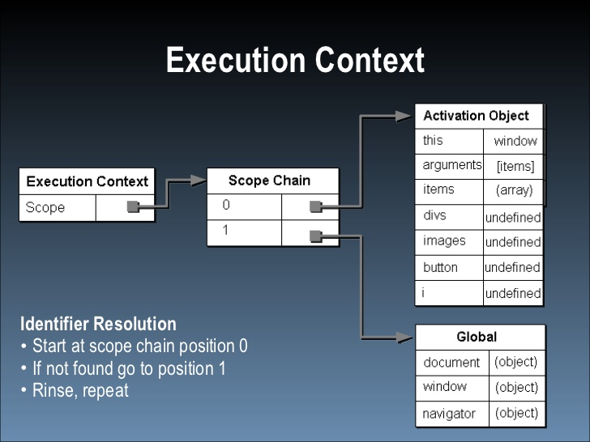
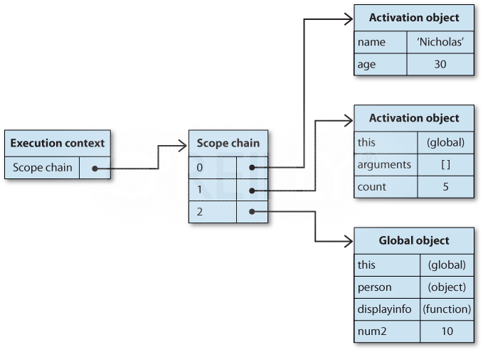

As the title suggests, there are two types of values a variable can hold: primitive values and reference values.
Primitive values are "atomic" pieces of data, like numbers and strings. When a primitive value is assigned to a variable, a copy of that value is assigned to the variable.
A reference value points to an object (it references it), so no values are copied/duplicated when an object is assigned to a new variable. If a reference value is copied into a new variable, and then one of the properties of the new variable are modified, any other variables which reference this object will also reflect this change.
All arguments are passed into a function by value, not by reference. So, if you try to update an object that was passed into a function as an argument (such as changing obj.name, in the example below), it does not change the object that was passed in, it only changes the local object created inside the function. The local object is destroyed as soon as the function has finished executing. Huh, this is actually still confusing, because obj inside the function still references the original object, until they try to overwrite it by declaring it as a new object. It says it is copied into obj, but that obj and person both point to the same object. Using new makes obj point to a different object, an object which is destroyed after the function runs. So, what would the alternative be? What would a reference argument be? Don't know, might need to look it up.
Here's an up-voted answer from Stack Overflow:
"When a parameter is passed by reference, the caller and the callee use the same variable for the parameter. If the callee modifies the parameter variable, the effect is visible to the caller's variable.
When a parameter is passed by value, the caller and callee have two independent variables with the same value. If the callee modifies the parameter variable, the effect is not visible to the caller."
Okay, so, two indpendent variables. Changing what the local variable points to in the function doesn't change what the original variable points to. Think I got it.
<script type="text/javascript">
function setName(obj) {
obj.name = "Nicholas";
obj = new Object;
obj.name = "Greg";
}
var person = new Object();
setName(person);
alert(person.name);
</script>
The typeof works well with primitive values, but doesn't work well with reference types, since it will only tell you it's an object. For reference types, you want to use instanceof operator, which can tell you which type of object it is. Note, any reference type will always be an instance of Object.
<script type="text/javascript">
var person = new Object();
var arr = new Array();
alert(person instanceof Object);
alert(arr instanceof Array);
</script>
Context refers to the code block in which something happens. The scope chain refers to the hierarchy of variables that a particular context has access to.
The global scope, also referred to as the window, is the outermost context, and is available to any other execution context. An execution context could be a function, a for loop, or any block of code that terminates. In javascript, there are only two primary types of execution contexts: global and function. So, a code block such as as if statement or a for loop does not have its own scope, and variables declared within it will be added to the global context. Below, I have created variables in three execution contexts:
<script type="text/javascript">
var levelOne = 1;
function secondLevel() {
var levelTwo = 2;
function thirdLevel(){
var levelThree = 3;
}
}
</script>
By clicking the links below, you can see that:
This section discusses two methods of augmenting the scope chain: try-catch and with. To be honest, reading the explanation isn't enhhancing my understanding of what Scope Chain Augmentation is. I will have to also Google this one.
Did a little Googling to find out what a try/catch statement is. I actually watched a video in the C programming language. As I learned earlier today from the Lynda course Programming Foundations Fundamentals, javascript is a language evolved from C, and is a C-style language (using curly braces and semicolons at the end of code blocks).
A try/catch statement is intended to catch exceptions (i.e., errors), then do something if they encounter errors in the try statement. I guess I originally thought that the author meant that a try/catch statement was a way of augmenting the scope chain (as in, you could purposely use it to access variables that are out of scope), but now I see it is intended for catching errors, and maybe just has to augment the scope chain somehow in order to do that. Also, I see from some diagrams on the web, that the scope chain appears to be "zero-based", meaning that the first item is numbered 0. So, if you have a function, it's position in the scope chain (of that context) would be 0, and the global/window would be 1. This is demonstrated in this image I found online:
So, it might be the case that it adds something else at position 0, which I think would be the front of the scope chain. I guess the same goes for the with statement.
Here's the with statement demo. I am not totally sure how the scope chain is being augmented here, though the book says "For the with statement, the specified object is added to the scope chain." (p. 93). "In this example, the with statement is acting on the location object, so location itself is added to the front of the scope chain." So... location is in position 0 in the scope chain?
The author seems to have also written a book called "Writing Efficient Javascript," in which he talks about this as well. Here is an image from the web page for that book demonstrating scope chain:
Here is a quote from that page explaining the diagram:
"The scope chain for a given execution context typically remains unchanged during code execution. There are, however, two statements that temporarily augment the scope chain of an execution context. The first is the with statement, which is designed to allow easy access to object properties by making them appear as local variables. For example:"
var person = {
name: "Nicholas",
age: 30
};
function displayInfo(){
var count = 5;
with(person){
alert(name + " is " + age);
alert("Count is " + count);
}
}
displayInfo();
"In this code, the person object is passed into a with block. This allows you to access the name and age properties as though they were locally defined. What actually happens, though, is that a new variable object is pushed to the front of the execution context's scope chain. This variable object contains all of the properties of the specified object (in this case, person) so that they can be accessed without using dot notation. Figure 7.4, "Scope chain augmentation using the with statement" shows how the scope chain for displayInfo is augmented while the with statement is being executed." (archive.oreilly.com)
Think I have made sense of it now, especially after seeing the diagram and this other explanation I've found (from the same author).
<script type="text/javascript">
function buildUrl() {
var qs = "?debug=true";
with(location){
var url = href + qs;
}
return url;
}
var result = buildUrl();
alert(result);
</script>
As I clarified earlier, variables can't be scoped to blocks of code, other than functions. Variables defined within curly braces aren't necessarily destroyed after the code within the curly braces has executed. For example, if a variable is declared within an if statement, that variable is added to the global context, and is accessible after the conditional statement has run. In the case of a for loop, the induction variable (var i) actually becomes a global variable that is accessible after the loop has executed. The presenter in this video suggests omitting var from the induction variable of the for statement, and instead, declaring i at the top of your javascript file with the other global variables, since it is going to be a global variable anyways.
if (1 < 2) {
var j = "jay";
}
alert(j);
for (var i =0;i < 2; i++) {
console.log(i);
}
alert(i);
</script>
Variables declared within a function using var are scoped to that function, but, if you initialize a variable inside a function without using var, that variable has global scope and can be accessed outside the function.
The identifier lookup (for a variable name, for example) starts in the current/local context, the moves to the next context in the scope chain. If it finds it in the current context (inside a function, for example), the search stops. But, if it doesn't find it in the function, it continues along the chain to the next context (e.g., the window/global) to look for it there.
Javascript is a garbage-collected language, so it automatically marks variables for deletion once they go out of scope. The next time the garbage collector runs, those variables are deleted, and the memory they used is freed up again. This is referred to as mark and sweep garbage collection.
Typically, you don't have to worry about memory management in Javascript, since it is a garbage-collected programming environment. But, because the amount of memory available to the browser is much less than other desktop applications, it can be useful to make sure that make sure that any global objects that you don't need anymore are set to null so that they will be garbage-collected. Below is an example of an object (created from a factory function), which is derferenced once it is no longer needed, it order to put it "out of context", so it will be marked for deletion next time garbage-collection occurs.
<script type="text/javascript">
function createPerson(name) {
var localPerson = new Object();
localPerson.name = name;
return localPerson;
}
var globalPerson = createPerson("Riley");
// Do something with globalPerson
globalPerson = null;
</script>